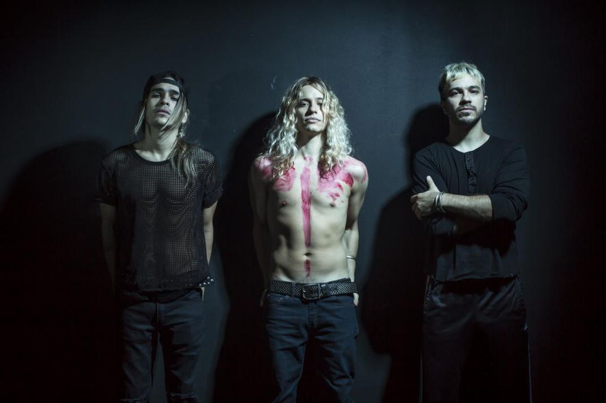

Gastón Faustino Sardelli, nació el 18 de abril de 1984 en Don Torcuato, Argentina, es bajista y vocalista de la banda de rock argentina Airbag. Gastón fue criado junto a sus hermanos: Patricio Sardelli y Guido Sardelli por su madre, Alicia Beatriz y su padre Gastón Sardelli. Gastón tenía una banda con sus amigos, y por cuestiones de espacio, ensayaban en su casa. Cuando los chicos de la banda terminaban de ensayar los tres hermanos se acercaban a probar los instrumentos, y se van dando cuenta que es lo que les gusta. Empiezan zapando temas de bandas como: Los Beatles, Bon Jovi, Credeence, Deep Purple. Con el paso del tiempo se van juntando menos con sus amigos y más entre ellos. Con Gastón en el bajo, Patricio en la guitarra y Guido en la batería se forma la banda "Los Nietos de Chuck" como se hacían llamar en un principio. Tocando en bars, pubs y demás los chicos van sonando cada vez mejor como banda.
Al pasar el tiempo, Patricio compone sus propios temas, y entre los tres le buscan un ritmo, ya con varios temas compuestos, los chicos deciden grabar un demo, el cual es repartido en cualquier lugar donde puedan. El demo llegó a las manos de la compañía Warner Music, y se les dio la oportunidad de grabar su primer disco. Los integrantes decidieron cambiar el nombre de la banda por Airbag. Su primer álbum fue titulado Airbag , del cual se desprendieron los cortes: "La partida de la gitana", "Quiero estar contigo", "Solo aquí" y "Ya no recuerdo". Fueron premiados como banda revelación en el 2005, en sus comienzos, y en el 2007 como mejor banda sur, entre otros reconocimientos. A principios del 2006 editaron su segundo disco Blanco y Negro, del cual se desprendieron: "Amor de verano", "Y tu", "All night long" y "Esta noche", que salió únicamente en radio. El 19 de agosto del 2006 realizaron su primer show en el estadio Luna Park con mucho éxito, y en el 2007 salieron de gira por latinoamérica, en países como Ecuador, Colombia, entre otros. Unos de los grandes éxitos de la banda fue Amor de verano del álbum Blanco y Negro. Esa canción está basada en una anécdota que le ocurrió a Gastón durante unas vacaciones de verano. Allí conoció a una chica con la cual mantuvo una relación hasta el final de las vacaciones, cuando se despidieron. La chica apareció semanas después diciendo que estaba embarazada de un hijo suyo pero él lo negó. En el 2008 sacan a la venta su 3er disco: Una hora a Tokyo en el que comparte las voces con Guido, el menor de los Sardelli. El primer sencillo de este álbum es Mi sensación donde los chicos son más rockeros y maduros en sus letras.
